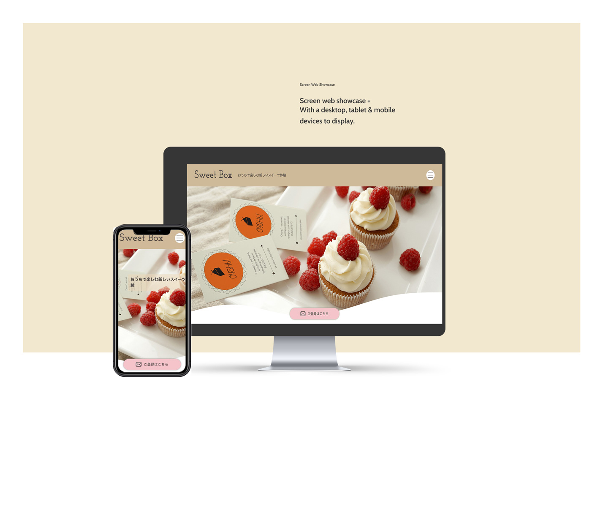

URL
http://kawano2022.starfree.jp/sweet-box/
ポイント
・phpを使い、お問い合わせのページをgoogleフォームを用いて実装。
・ジェネレーターを用いてメイン画像下の境界線に変化をつけ、可愛らしいデザインに仕上げた。
・Canvasを使用し、JavaScriptベースでパーティクルを表現し華やかさを加えた。
・架空サイトの店名はchatGPを使用し、自身でオリジナルのロゴを5つ作成した。
制作期間
1ヶ月
使用ツール
php,google form,chatGT,photoshop,Illustrator